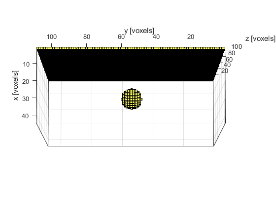

3D FFT Reconstruction For A Planar Sensor Example
This example demonstrates the use of k-Wave for the reconstruction of a three-dimensional photoacoustic wave-field recorded over a planar array of sensor elements. The sensor data is simulated using kspaceFirstOrder3D and reconstructed using kspacePlaneRecon. It builds on the Simulations In Three Dimensions and 2D FFT Reconstruction For A Line Sensor examples.
Contents
Simulating the sensor data
The sensor data is simulated using kspaceFirstOrder3D in the same way as in the preceding simulation examples. The initial pressure is created using makeBall and is again smoothed prior to invoking the simulation. The sensor mask is defined to be a planar sensor array (over a plane x = const). A visualisation of the initial pressure distribution and the sensor mask using voxelPlot is given below.
% smooth the initial pressure distribution and restore the magnitude source.p0 = smooth(p0, true); % define a binary planar sensor sensor.mask = zeros(kgrid.Nx, kgrid.Ny, kgrid.Nz); sensor.mask(1, :, :) = 1;
Performing the reconstruction
The reconstruction is invoked by calling kspacePlaneRecon with the sensor data (recorded over a planar sensor array), as well as the properties of the acoustic medium and the sampling parameters. By default, the sensor data input must be indexed as p_tyz(time, sensor_y_position, sensor_z_position). Alternatively, the optional input parameter 'DataOrder' can be set to 'yzt' (the default setting is 'tyz'). In both cases, the simulated sensor_data returned by kspaceFirstOrder3D must first be reshaped.
% reshape sensor data to y, z, t sensor_data_rs = reshape(sensor_data, Ny, Nz, kgrid.Nt); % reconstruct the initial pressure p_xyz = kspacePlaneRecon(sensor_data_rs, kgrid.dy, kgrid.dz, kgrid.dt, ... medium.sound_speed, 'DataOrder', 'yzt', 'PosCond', true, 'Plot', true);
The size of the recorded data and the time to compute the reconstruction are both printed to the command line.
Running k-Wave planar reconstruction... grid size: 212 by 44 by 44 grid points interpolation mode: *nearest applying positivity condition... computation completed in 0.14516s
A plot of the initial pressure distribution and the reconstructed initial pressure distribution with a positivity condition (interpolated onto a k-space grid with the same dimensions) are shown below. The three displayed image planes intersect at the centre of ball shown above. An animated slice-by-slice visualisation of the reconstructed initial pressure distribution can also be viewed using flyThrough.